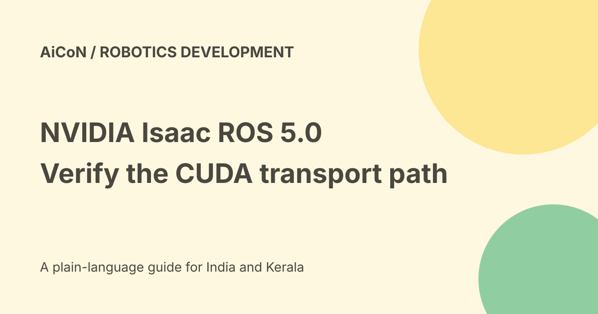

NVIDIA Isaac ROS 5.0: CUDA buffers and migration checks
NVIDIA says Isaac ROS 5.0 nodes use a CUDA buffer backend built around ROS 2 Lyrical's rosidl::Buffer abstraction. An AI coding-agent workflow can help migrate an existing node. Zero-copy transport applies only when runtime conditions allow; installing a skill does not guarantee faster robotics code.

What changes in data movement
A ROS node can process a sensor payload on a GPU, then pass it to another node. Moving that payload through CPU memory can add copies and delay.
NVIDIA's September tutorial describes GPU-resident buffers being exchanged while preserving standard ROS messages and node boundaries. The aim is to reduce unnecessary transfers around the computation, not replace the computation itself.
What rosidl::Buffer means
This is a ROS message-data abstraction that can use different storage backends. NVIDIA contributed a CUDA backend for supported GPU paths.
A buffer-backed message is not proof that every subscriber, encoding and memory lifetime meets the fast-path requirements. Check the actual graph and runtime negotiation.
The AI migration workflow
The tutorial names a migrate-node-to-rosidl-buffer workflow. It asks the coding agent to record the starting revision, inspect local changes, trace each message field and identify copy boundaries.
The next step is a minimal interface-preserving patch with independent verification. That is narrower than automatically rewriting a whole robot or safely deploying every proposed change.
The demonstration node
NVIDIA uses a Depth Anything 3 TensorRT node as its example. It describes accepting CUDA-backed input and writing inference output directly into GPU-backed message storage.
The standard sensor_msgs/msg/Image interface remains. The tutorial says no duplicate CUDA topic or custom message is required in that demonstration. Your node can have different assumptions and dependencies.
CPU fallback still matters
The tutorial retains a non-CUDA route. Optional point-cloud construction or debug visualisation can require device-to-host copies and synchronisation.
Do not remove a necessary CPU boundary merely to make a benchmark look clean. Preserve behaviour, encoding, dimensions, strides, timestamps and optional outputs.
A careful migration plan
- Save the starting revision and current local changes.
- Confirm ROS version, NVIDIA hardware and package support.
- Trace data from receipt through processing to publication.
- Identify required copies and unnecessary copies separately.
- Review the agent's per-field migration plan.
- Make the smallest patch that preserves interfaces.
- Test ordinary CPU fallback and the eligible CUDA path.
- Test separate-process transport and buffer lifetime.
- Profile real transfers and latency before deployment.
No code was installed, compiled, migrated or run on hardware for this guide.
Verify, do not infer
NVIDIA recommends Nsight Systems to inspect GPU work and memory transfers. On an eligible path, it says payload-sized host-device transfers should not appear at the ROS boundary.
The subscriber's backend type can also report cuda when both endpoints meet requirements. A successful compile alone does not prove this negotiated path was used.
Use comparable before-and-after workloads. Check correctness as well as latency, and include optional outputs rather than hiding their cost.
Hardware and India costs
The tutorial discusses deploying the resulting graph on Jetson AGX Thor. It is a specialist ROS 2 and NVIDIA GPU workflow, not a general phone app or a way to make an unsupported laptop run the same stack.
Public tutorials and downloads do not make hardware, power, storage, cloud compute or professional support free. No India device price, hosted free allowance or final project budget was verified.
Licences and robot safety
Check the licences of the exact packages, models and dependencies you use. Publicly accessible code is not evidence that every component has identical redistribution rights.
Keep tests in a controlled environment. A performance patch can still change memory ownership, timing or failure behaviour. Do not move a physical robot into an unsafe setting based only on an AI-generated patch.
What changed since the original post?
Two repeated archive posts are consolidated into this guide. We retain the runtime condition, explain CPU fallback and separate a migration demonstration from a verified improvement in your own robot.
Frequently asked questions
Is zero-copy guaranteed everywhere?
No. Runtime compatibility matters.
Does a compile prove it is faster?
No. Profile the negotiated path and compare results.
Was a robot tested?
No.
Sources: Official NVIDIA migration tutorial · Official Isaac ROS entry point. Checked 7 October 2026.